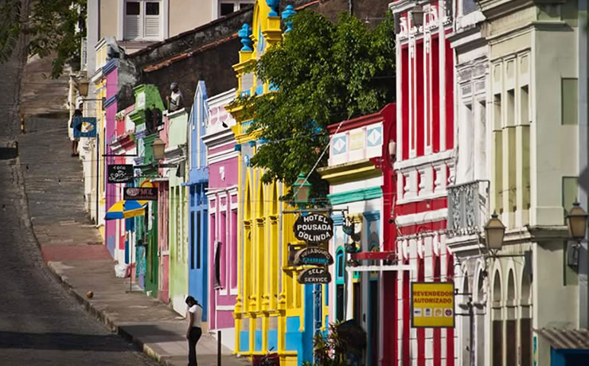
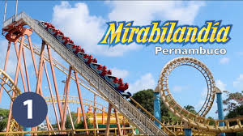

Pontos turísticos de Pernambuco


|
RECIFE | PORTO DE GALINHAS | FERNANDO DE NORONHA |
|---|
RECIFE

Recife Antigo
E já que estamos falando em passeios históricos, não podíamos deixar de fora o Recife Antigo, um dos pontos turísticos de Pernambuco mais tradicionais. O local é o centro histórico da cidade e tem várias atrações. A boa notícia é que como as atrações são pertinhas umas das outras, você pode explorar o centro todo a pé e em apenas um dia. A dica é começar pela Praça do Marco Zero, seguir para o Centro Cultural Cais do Sertão, conhecer o Espaço R.U.A e o Museu Paço do Frevo, e finalizar o dia com um passeio de catamarã pelas pontes de Recife. Ah, mas se você não abre mão de fazer compras durante a viagem, a dica é visitar a Feirinha de Bom Jesus.
Olinda
este é o nosso próximo destino em Pernambuco! Famosa por suas ladeiras e pelo colorido das suas ruas, a cidade é uma das mais antigas de Pernambuco e mescla história e tradição. Pra quem vai passear por lá, a dica é andar bastante e explorar os arredores. Se você for no Carnaval, melhor ainda. Olinda é famosa por ter uma das melhores festas carnavalescas do país.
